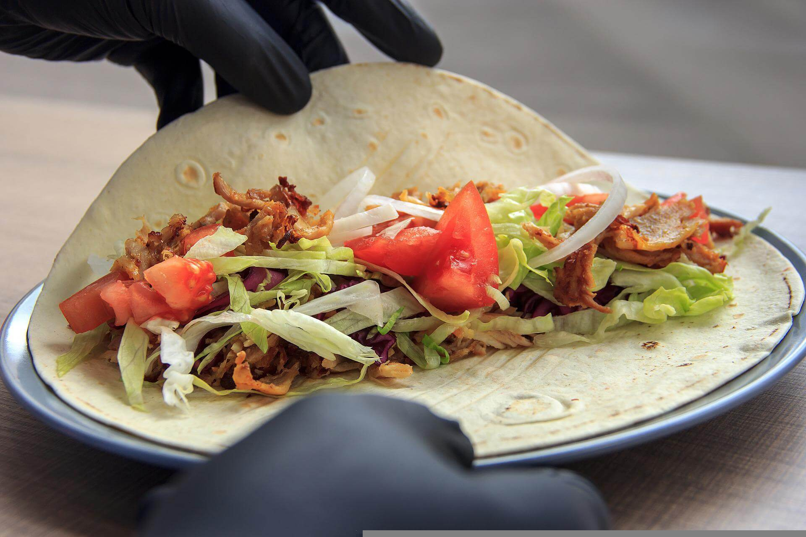

Com fer un kebab a casa
Que és?
Un kebab es un plato tradicional de Medio Oriente y Asia Central que consiste en carne cocinada a la parrilla o asada. Existen diferentes tipos
de kebab, como el shish kebab (trozos de cane en brochetas), el doner kebab (carne cocinada en un asador giratorio y cortada en finas capas) y
el kofta kebab (carne molida en forma de albóndigas). Los kebabs suelen ser servidos con pan, arroz,ensaladas y salsas como yogur o tahini,
y se caracterizan por su sabor especiado y su versatilidad.

Ingredientes necessarios para nuestro kebab casero.
Per marinar la carn
- 1 ingredient: El tipus de carn que vas a utilitzar
- 2 ingredient: 1 Iogurt grec
- 3 ingredient: 1 trèvol d'all
- 4 ingredient: Mitja cullerada de pebrots dolços
- 5 ingredient: Mitja cullerada de cumina en pols
- 7 ingredient: Mig cullerada de pebre negre acabat de terra
- 8 ingredient: un raig de brandi
- 9 ingredient: 1 cullerada de suc de llimona
- 10 ingredient: Oli d'oliva
- 11 ingredient: Surt.
Per a la salsa de iogurt
- 1 ingredient: 1 Cogombre
- 2 ingredient: 1 Iogurt grec
- 3 ingredient: 1 cullerada de suc de llimona
- 4 ingredient: Stung Dill
- 5 ingredient: Petits dormidors o mentons
- 7 ingredient: Surt.
- 8 ingredient: un raig de brandi
- 9 ingredient: Freshly ground pebre negre
- 10 ingredient: 1 cullerada d'oli d'oliva
- 11 ingredient: Surt.
El resultat de un kebab casero. Que vagi de gust!
link.